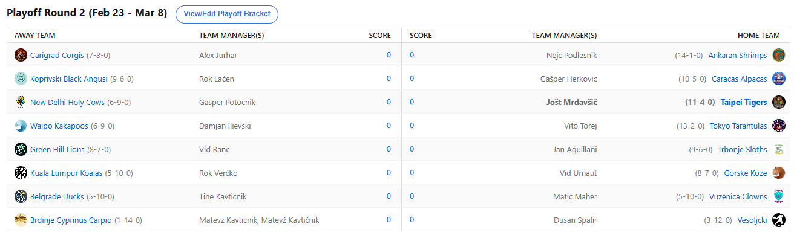

SEZONA 25/26
- Pravila in sistem tekmovanja
- Matchup1 (Oct 21 - Oct 26)
- Matchup2 (Oct 27 - Nov 2)
- Matchup3 (Nov 3 - Nov 9)
- Matchup4 (Nov 10 - Nov 16)
- Matchup5 (Nov 17 - Nov 23)
- Matchup6 (Nov 24 - Nov 30)
- Matchup7 (Dec 1 - Dec 7)
- Matchup8 (Dec 8 - Dec 14)
- Matchup9 (Dec 15 - Dec 21)
- Matchup10 (Dec 22 - Jan 28)
- Matchup11 (Dec 29 - Jan 4)
- Matchup12 (Jan 5 - Jan 11)
- Matchup13 (Jan 12 - Jan 18)
- Matchup14 (Jan 19 - Jan 25)
- Matchup15 (Jan 26 - Feb 1)
- Play-in (Feb 2 - Feb 22)
- Playoff 1 (Feb 23 - Mar 8)
- Playoff 2 (Mar 9 - Mar 22)
- Playoff 3 (Mar 23 - Apr 5)
2025/26 - Fantasy Koroška - sezona 9
Playoff Round1 - Quarterfinals (Feb 23 - Mar 8)

Recap: Quarterfinals
20 tednov je za nami, pred nami pa zgolj še 4 … Toda le-ti bodo seveda najpomembnejši. Prav toliko je namreč še ostalo ekip v igri za
zmago in naslov prvaka 9. sezone NBA Fantasy Koroška.
Edini še preostali manager v igri, ki ima možnost titulo osvojiti prvič, je strateg moštva Waipo Kakapos, ki šele drugo sezono nastopa v ligi – Ilja.
Vsekakor enormen korak naprej, po tem ko je lani zaključil na skromnem 13. mestu, se bo letos boril vsaj za stopničke. V izjemno
napetem četrtfinalnem obračunu sophomorjev je bil na koncu uspešnejši od Vita Toreja. Slednji se bo na boleč način naučil, da se
tako pozno v sezono na tržnici s prostimi igralci pač ne špara denarja … Bil je namreč outbidan kar 4 dni zapored in čeprav najbrž
v nobenem primeru ne bi zbral dovolj točk za napredovanje, so bili tisti na 2. in 3. prionu vendarle slabše opcije in tako so se
Toresove šanse še nekoliko zmanjšale. Bi pa Vitu na tem mestu zaželeli čim prejšnje okrevanje in povratek na košarkarska igrišča <3.
Ista trditev pa žal ne more veljati za Cicka. Lahko bi celo rekli prav nasprotno, da je primanjkljaj denarja njemu celo prinesel polfinale. Vsakič, ko je
bil na marketu par dolarčkov prekratek, se je to izkazalo še za boljšo potezo in tiste druge in tretje, včasih celo četrte in
pete prioritete so mu odigrale življenjske tekme in glede na končno razliko … Posranko Posrankič strikes again lol. Tole je za
Nejca še 3. zaporedni polfinale in glede na redni del bi težko rekli da nezaslužen, a vendarle ostaja grenak priokus predvsem
za osmoljenca Freda. Slednji je namreč izpadel s 3. scorom kroga, na koncu morebiti celo lastna napaka v presoji in varnejšem
pristopu usodna za napredovanje. Vprašljivi Buzelis bi namreč bil dovolj za zmago, a je ostal na klopi Corgijev, ki se bodo
tako morali sprijazniti z boji za 5. mesto. Vsekakor velika nesreča za 2x prvaka Aleksa in zdaj je že znano, da se bo tista
povprečna uvrstitev 4,13 poslabšala.
Naslednje upanje ljudstva pri utišanju Cicka pa bo tokrat Herko. V pravem državnem prvenstvu švasarjev, so se njegove Alpake vendarle uspele zbrati in si
zagotoviti mesto v polfinalu. Gašper se tako po 2 letih vrača v polfinale in išče svojo drugo titulo. Če upoštevamo še zmago
na pubquizu v ŠTO-ju bi lahko rekli da je za Herkom zelo uspešen teden 8). Se pa vsekakor krvoločni strateg Alpak tukaj ne
namerava ustavljati, naslednja tarča je Cici in videli bomo, ali ga lahko v tem obračunu U160cm utiša. Kaj reči na drugi
strani za Lačna…. Ne samo da ni vedel, kako se imenuje posodica za Creme brulee, ni očitno vedel niti, da bo Jalen
Smith out forever in ga pridno in vztrajno držal na rosterju skozi celoten matchup. Ob dejstvu da je do preteklega
petka čakal še Tatuma in še nekaterih drugih izostankih Powlla in Markannena, je to bilo seveda preveč in Angusi so
sklenili boj za prvaka in se bodo zdaj lotili bojev za 5. mesto. Vsekakor bi tudi to bil lep uspeh in če drugega ne,
ima Lačenovski zdaj ogromno časa, da se posveti jedilniku za piknik. Komaj čakamo!
Še zadnji četrtfinalni obračun, ki pa je bil vsaj rezultatsko najmanj napet pa je potekal med Tigri in Svetimi Kravami. Jole je že pripravljal risanko za flejm,
a mu je zmanjkalo kreditov za AI Vid generator in se je Geps tokrat izvlekel »za na žar, ne za polfinale«. Kakorkoli že,
Geps je zabeležil celo 4. najboljši score in bi ob nekaj več sreče pri razporedu zlahka prišel tudi višje. A naletel je na
vroče Tigre, ki so bilo prevelik zalogaj in roko na srce, se je matchup odločil že takoj prvih nekaj dneh, ko je Jole
povedel z 200 točkami razlike in takšne prednosti jasno ni izpustil iz rok. Tole je 10. zaporedna zmaga za Tigre in s
tem vstop v prestižni klub štirih managerjev, ki so kadarkoli povezali dvomestno število zmag. Tam se je priključil Cicku,
Fredu in Verčkiju. Se pa Jošt s tem nikakor ne misli sprijazniti, letos je čas za naslov in od le-tega ga ločita še 2 oviri.
Ne bi se pretirano poglabljali v dvoboje consolation bracketa, najboljši so bili tam po pričakovanju Slothsi, tesno so jim sledile tudi Koze. Zdaj je
jasno consolation bracket postal še bolj zanimiv, trenutno se za 5. mesto borita Voka in Vito, zmagovalec tega matchupa bo
tako najmanj 6., poraženec pa se bo prihodnji matchup udaril za 7. mesto in tako dalje. Gajbarski dvoboj je tokrat dobil
Kavt in znižal zaostanek v tej sezoni na 1-2.
Kakorkoli že, čaka nas polfinale in najprej srečno vsem udeležencem, ne pozabite na predictione in seveda, obkrožite si na koledarju datum 18. april,
ko se v zgodnjih popoldanskih urah na klasični lokaciji prične težko pričakovani piknik. LPLMJM
Best memes